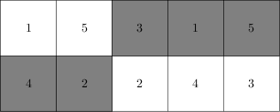

Cho N số từ 1 đến N được viết vào các ô của bảng kích thước 2*N sao cho mỗi số xuất hiện đúng 2 lần trong bảng và mỗi cột chứa 2 số khác nhau
Chúng ta sẽ tô màu mỗi ô bằng màu trắng hoặc đen sao cho 2 ô ở cùng một cột sẽ tô màu khác nhau và các ô chứa các số bằng nhau cũng sẽ tô màu khác nhau. VD:

Yêu cầu: Có bao nhiêu cách tô màu như vậy?
*Chú ý: đáp số giới hạn kiểu longint
1<=N <=10000